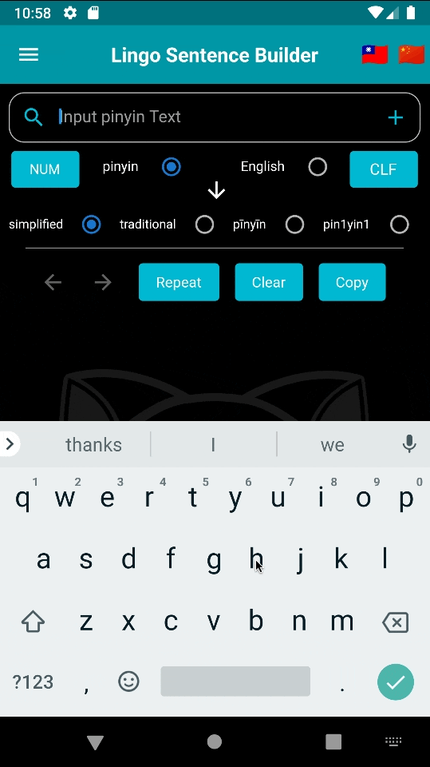

Home
Welcome to the home page of Lingo Language Tools, exciting new language input tools made for Android and IOS devices. Find direct links to all our applications by clicking the links tab.
Latest News:
9/7/2022 UPDATE!!!
Lingo MN 1.0.4 & MNF Mandarin Romanization 1.0.5 Released
Download them now
Sorry to anybody that ran into trouble with these Apps the past couple of months. The dictionary sequencing was out of order and it was hard to use. Everything's back to normal now.
----------------
9/2/2022 FULL Website Update!!!
Find out what LLT can do for you
----------------
6/19/2022 NEW APP!!! JAPANESE ROMAJI ADDED
Lingo JP & Lingo JPF (Japanese) have been added to our line of Lingo Apps
Be sure to Say hello to Isamu here:
Lingo JPF (Japanese Free): Google Play
Lingo JPF (Japanese Free):App Store
Lingo JP (Japanese Full Version): Google Play
Lingo JP (Japanese Full Version): App Store
About
Lingo Apps are high performance Android and Iphone text input tools for foreign languages, such as Thai, Mandarin Chinese, Cantonese, and Japanese, using the English keyboard and Romanized vocabulary equivalents in their respective language. Accuracy in spelling and vocabulary can be assured by verifying the selection along with Lingo's built-in dictionary. Built for fluent speakers of the language and beginners alike, continued repetition and familiarity will allow the user to input text faster and more efficiently than text entered by the language's native keyboard. Modern communication requires modern language tools.
Romanization
About Romanization
Whenever an individual decides to learn a new spoken language, one of the primary developmental steps is to learn proper pronunciation of that language. Inevitably, for those who grew up speaking another language natively, this will consist of taking that native language and in particular, taking the writing style of that language and using it to help learn how to pronounce the new language. In the case of the Roman (Latin) script alphabet (used in a variety languages, such as English, Spanish, French, or German), this process is called Romanization. Romanization helps the language speaker with pronunciation of unfamiliar vocabulary and also serves as a memorization aid, because it helps the speaker notate and visualize the pronunciation so it can be recalled for later use.
Non-phonetic Languages
Complicating things a bit further, not all written languages are phonetic (referring to Chinese-based languages and parts of both Thai and Japanese languages, in particular), meaning unfamiliar vocabulary of that language will exist in a written form that can not be sounded out by it's appearance alone. Luckily, Romanization is a phonetic writing style. In this function, Romanization also acts in a crucial supporting role to help clarify ambiguous pronunciation.
Romanizations of the English word 'dog'
(Obviously our resident canine Isamu made this for us!)
Stigma
Because of the reliance on Romanization in early stages of language study, it has a stigma of being an elementary learning tool, subsequently abandoned after you are able to properly learn the writing system. Likewise, it also has a stigma of being a tool of the lazy and cast aside as a crutch for those who don't have the time, interest, or resources to properly learn the language's writing system.
Our perspective
Here at LLT we like to consider Romanization as a foundational building block of language study. Romanization should remain in the toolbox of any multi-linguist, both as a learning aid and as a catalyst for vocabulary recognition and memorization. In proper context, Romanization is almost like a secret language within the language and has its own unique merit. Why would anyone take time and effort attempting to forget something which they've already studied and learned instinctively? We try to make things easy for ourselves by combining all the tools we have to use and making the most out of them. Accordingly, Romanization is one such tool, and it serves as the backbone of all LLT applications. As you will soon see, it also works very well in that regard.
Use
Text Input
At their core, our applications are text input tools. They can be used to script messages, emails, posts in languages you are studying or are already conversationally fluent. Efficient, fast, and accurate.Example #1: Text input using Lingo JP
Let's say you are instant messaging a Japanese hotel. You want to type:
Yoyaku shite imasen. Aite iru heya wa arimasu ka?
I don't have a reservation, do you have any open rooms?
With Lingo JP, we are able to quickly achieve the end result:
予約していません。空いている部屋はありますか？
We can then copy the text using the copy button, paste it and send it on it's way.
Dictionary
The main advantage to using Lingo as opposed to any other text input method is the incorporation of an English dictionary interwoven within the framework of the application. The dictionary will autosuggest a selection using correct spelling and the user will also confirm the selection so mistakes are minimized. A dictionary to assist the user is vital for English speakers or for those learning second languages, especially to help identify newly learned or seldom used vocabulary.Besides the benefit of actually having a dictionary within the application, is the benefit of physically having it within your mobile device, which for most, is with them at all times. Gone are the days of physically carrying around a dictionary or phrasebook with you when you travel or when you are studying a new language. Did we mention the dictionary doesn't need mobile data or wifi to fully operate?? So it's with you at all times AND will be fully operational. Here are some ideas of how the app's dictionary can be utilized when you are on the go:
Example #2: 'What was that word again?' using Lingo CN
Have you ever been mid-sentence and you forget what something is called? It happens to all of us, even when speaking in our native tongue, but especially as we get older!! üòõ
In the example below, the user is at the hospital and forgets how to say 'insurance' in Cantonese:
Switch the app to English entry, and type in 'insurance'. There it is!
保險 bóu hím (bou2 him2)
Example #3: 'What did you say?' using Lingo TH
Sometimes when you travel, you're not sure what somebody has just said, but you need to look it up by sounding it out like you think it's spelled in a Romanized form.
In our example, the user is walking around Bangkok with a puppy under his arm. A little schoolgirl runs up to him and cries something that sounds like 'yaak dai' to him, but he doesn't know what she's saying:
Type 'yaakdai' in, what comes up??
'would like to get (something)'
Oh! She wants one!!
Creative uses
Keep creative! There are other ingenious ways our apps can be used:• Use it as a study aid to practice a new language - Get out a phrase or textbook and start typing away. Type out thoughts you wish to communicate. Practice your reading comprehension. Visualization and memorization are intertwined. LLT apps are here to help.
• Confirm proper spelling/character use in the language
• Communicate in a noisy environment with a native speaker
• Communicate with the hearing impaired 
Data Privacy
LLT is committed to keeping your devices private, secure, and safe from harm while keeping your experience AD-free. We make every attempt to make sure that LLT user data is not a commodity to be bought or sold. All LLT Apps are self contained and run in the native code of your device to ensure the best performance possible. All of our apps are completely functional without internet data transfer, so they will always be functional whether or not you have mobile data or a wifi connection. Use our apps whenever and however you like with full privacy. Our customers expect nothing less.
Links
Check us out on Google Play and the AppStore:
Lingo THF (Thai Free): Google Play
Lingo THF (Thai Free): App Store
Lingo MNF (Mandarin Free): Google Play
Lingo MNF (Mandarin Free): App Store
Lingo CNF (Cantonese Free): Google Play
Lingo CNF (Cantonese Free):App Store
Lingo JPF (Japanese Free): Google Play
Lingo JPF (Japanese Free):App Store
Lingo TH (Thai Full Version): Google Play
Lingo TH (Thai Full Version): App Store
Lingo MN (Mandarin Full Version): Google Play
Lingo MN (Mandarin Full Version): App Store
Lingo CN (Cantonese Full Version): Google Play
Lingo CN (Cantonese Full Version): App Store
Lingo JP (Japanese Full Version): Google Play
Lingo JP (Japanese Full Version): App Store
Contact
Contact LLT at: maldarrow4@gmail.com
 American developed with pride
American developed with pride